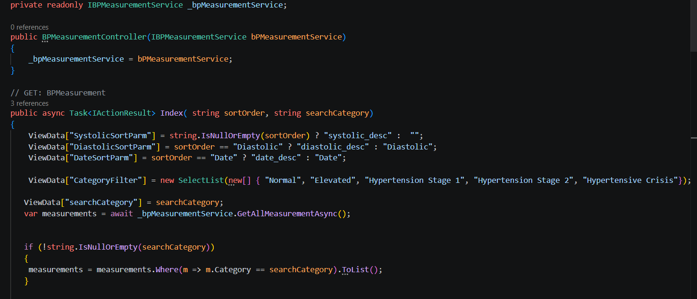
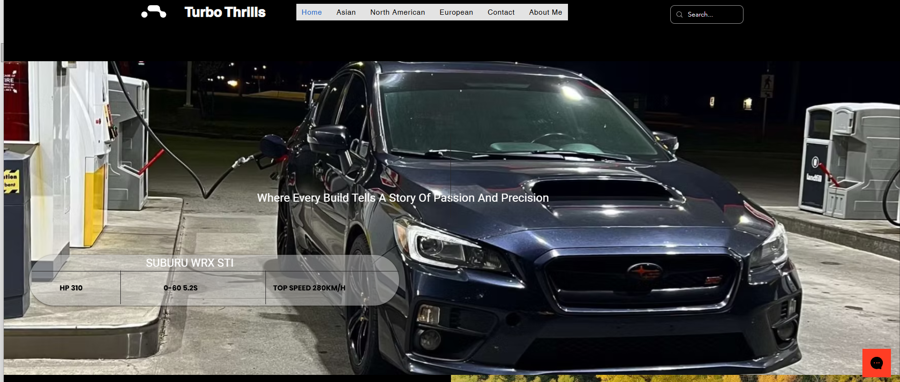
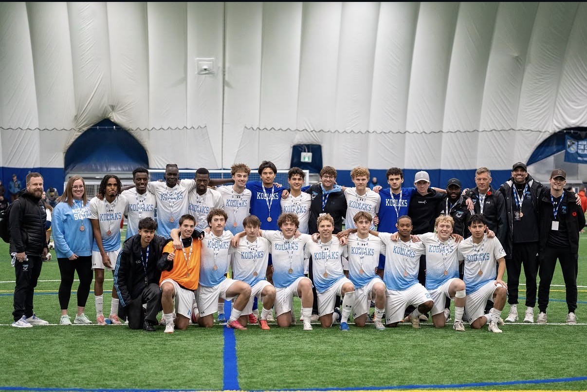

Computer Information Technology Student Lethbridge Polytechnic
"my mission as an IT professional is to build realiable user-friendly web application and system that solve real problems. I aim to combine my strong technical skills with clear communication and teamwork to deliver solutions while continiung to learn everyday.
My full resume is linked at the top of this page. Below is my volunter experience which highlights my soft skills:
"Cris demonstrates a strong work ethic, commitment, and a positive team-first attitude, consistently putting forth his best effort, supporting those around him, and showing pride in being part of an organization while continouing to develop his personal and proffesioanal skills." -- Mike Racz: lethbridge Polytechnic Men's Soccer Head Coach
"Cristofer shows Strong commitment and work ethic always bringing a smile to his co-workers, with strong leadership to the given task -- Tejpal Kaur: General Manager Mcdonalds
BPmeasurements2 React web

created a web application that can track blood pressure and track whether blood pressure is good or bad. currenly doesn't work due to the fact that visual studios was given as part of my old college so it has to be redownloaded but snippet of some code I did.
UI/Ux Design & Web Project (wix)

Varsity Athletics & Teamwork (Lethbridge Polytechnic Men's Soccer)

out of my IT clasroom, I am a collegiate athlete competing as a varsity keeper who loves competetion and thrives to be the best of the best.